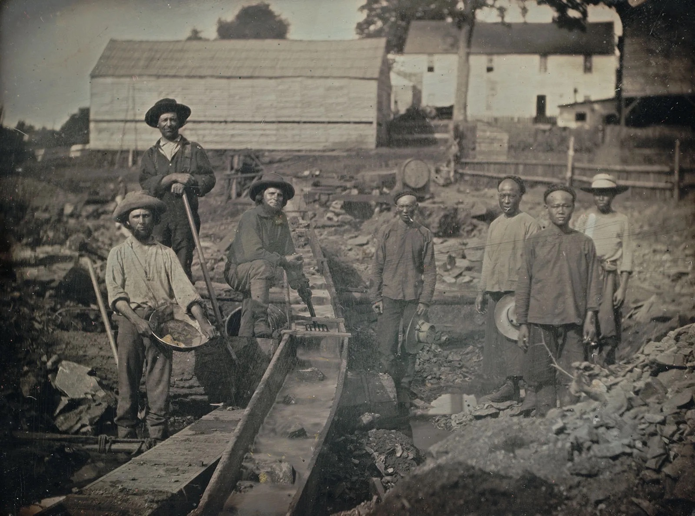
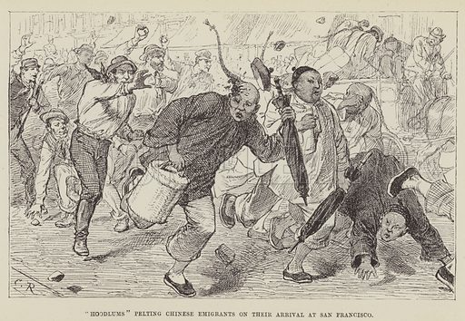

Origin

Early Chinese Immigrants
The Chinese Exclusion Act of 1882 was a response to growing anti-Chinese sentiments in the United States. Chinese immigrants flocked to the U.S. in the early 1800s in search of opportunities provided by the California Gold Rush and the Transcontinental Railroad, seeking jobs and riches.
"We commend the authorities entrusted with enforcing the Chinese Exclusion Act, believing that any relaxation of inspection methods would lead to the admission of Chinese immigrants under false pretenses… The imperative demand of the working people is that the door of the United States remain closed to Chinese."
-The Labor World, 1905
Growing Resentment
Initially, American communities generally welcomed Chinese immigrants with open arms, respecting them as hardworking and able to procure gold out of nothing from the mines. However, this would all change in the 1870s after the onset of an economic depression. With the demand for gold increasing and the economy failing, Americans began pointing blame at the Chinese. An increasing number of Americans viewed Chinese immigrants as a threat. Many media publications perpetuated these views. The images on this page reflect the shift in public perception: the first image, "California Gold Rush," showed white and Chinese individuals coexisting during the gold rush. However, "Hobson's Choice - you can go or stay" and "Hoodlums pelting Chinese Emigrants on their Arrival at San Francisco" illustrate how, within a few decades, Chinese immigrants became targets of hate and were scapegoated for America's economic struggles, fueling anti-Chinese sentiment.
